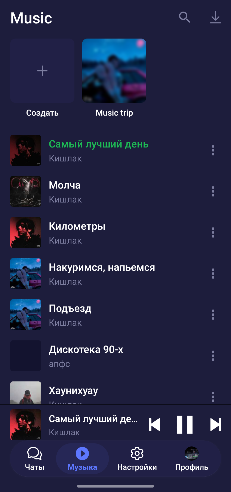
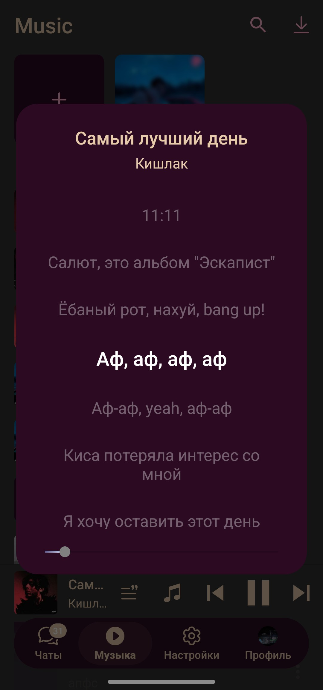
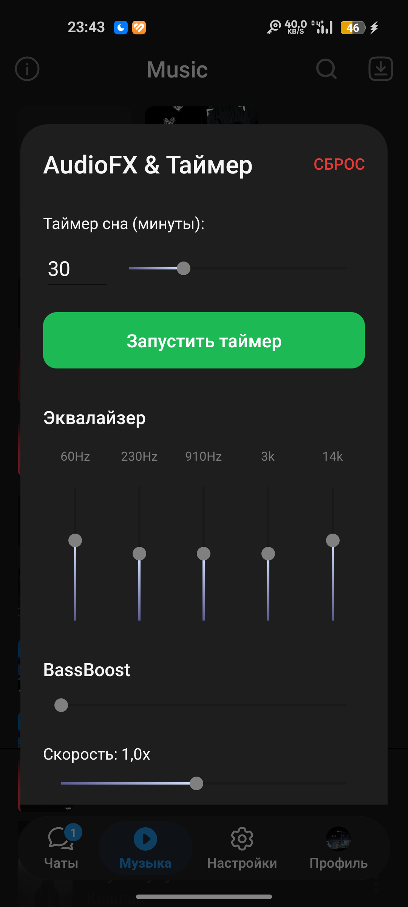
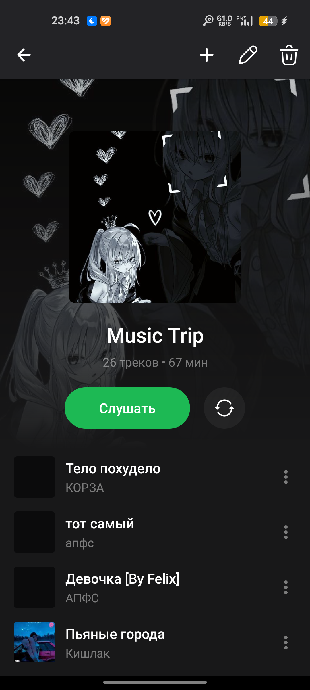
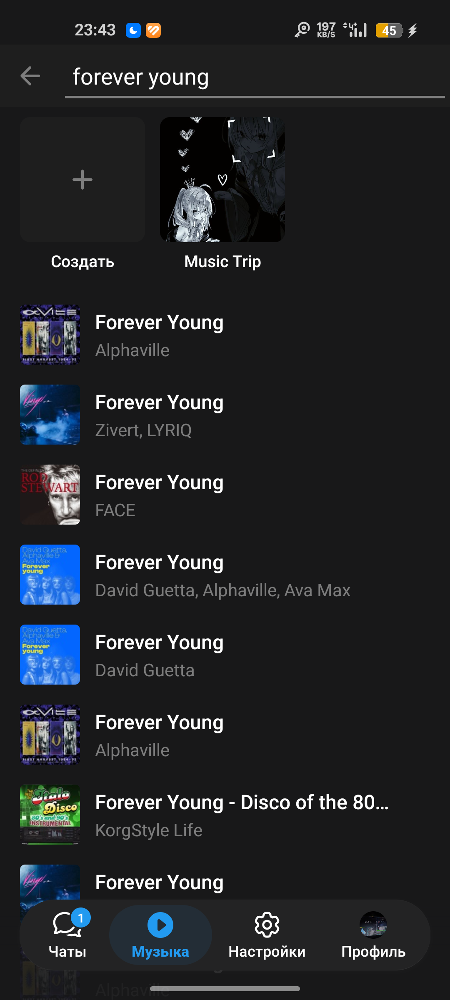

Забудьте о сторонних приложениях. Музыка интегрирована прямо в сердце мессенджера с красивыми обложками на весь экран и удобной очередью.

Подпевай любимым трекам. Синхронизированные тексты песен плавно идут в такт с музыкой, создавая идеальное погружение.

Тонкая настройка звучания под ваши уши. Регулируйте частоты, включайте BassBoost, меняйте скорость воспроизведения и ставьте таймер сна.

Создавайте идеальные подборки для любого настроения. Удобный интерфейс управления, поддержка длинных миксов и мгновенное переключение.

Находите любые треки, ремиксы и каверы за секунды. Сохраняйте музыку в умный кэш в один клик и слушайте оффлайн в высоком качестве.